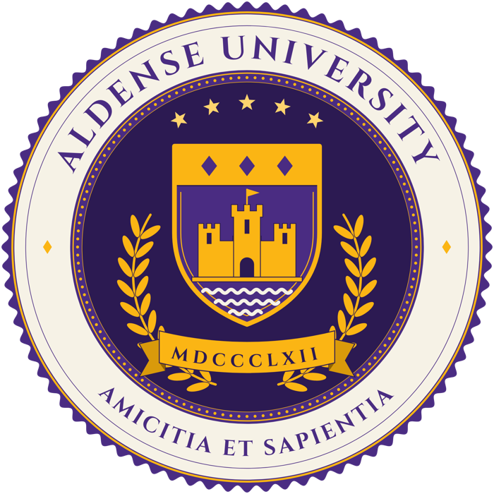

An elite small university on the New Brolin headland.
ApplyVisit campus
Aldense University is a private university in New Brolin, on the headland south of downtown, on about 210 acres. Motto: Amicitia et Sapientia.
Schools and areas of study.
Classes, late nights in the library and Saturdays in the stands.


Rivalry: UA Silverbrooks Mets.
| Venue | Sports | Address |
|---|---|---|
| Brady Field | Football | 1 Bruin Way |
| Bruin Arena | Basketball, hockey | 300 Headland Rd |
| James L. Gore Sailing Pavilion | Sailing | New Brolin |
From around campus. All stories → · University News →
The new clinic in New Brolin has answered questions on leases, deposits and small claims.
Athletics · Published Nov 8, 2026Aldense plays its home opener this week. Students get in free with a school ID.
Academics · Published Nov 5, 2026New upper-level courses and a hands-on lab section are open to students in every major.
Tours every weekday. Applications for fall 2027 are open at aldense.edu.